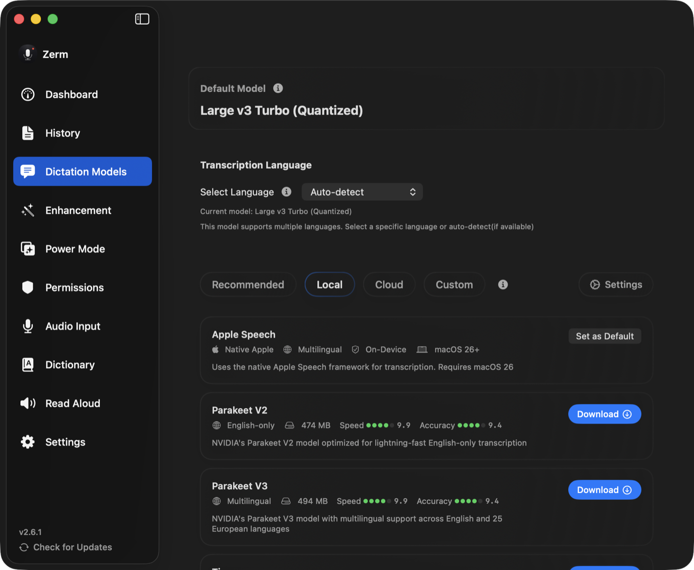

Advanced
Custom local models
Import your own fine-tuned Whisper model and use it exactly like a bundled one.
If you have a Whisper model that fits your work better than the standard ones — a
fine-tune on your domain's vocabulary, your accent, or a language the general models
handle poorly — you can import it and Zerm will treat it as a first-class local model.

What Zerm accepts
A .bin file in ggml format, the format whisper.cpp uses. That is the same
format as the models Zerm downloads for you.
If your model is in a different format — a PyTorch checkpoint, safetensors, a Hugging
Face repository — convert it to ggml first with the conversion scripts in the
whisper.cpp project. Zerm does not convert anything.
Quantised ggml models work and are usually the better choice: much smaller, with a
small accuracy cost.
Importing
- Open AI Models and choose the Local filter.
- Scroll to the end of the list and select Import Local Model…
- Choose your
.binfile.
The model is copied into Zerm's model directory and appears in the list next to the
bundled ones. Select it like any other model, set it as default, or pin it to a
Power Mode.
Delete it from the same list. That removes Zerm's copy; your original file is untouched.
What to expect
It runs locally. Same as any bundled model — no key, no network, Metal acceleration
on Apple Silicon.
Everything downstream is identical. Filler-word removal,
dictionary replacements, formatting, and
enhancement all behave the same. The only thing that changes is
what produces the first draft.
Language support comes from the model. Zerm cannot know what your fine-tune covers,
so it does not restrict the language picker. Choose a language the model actually
handles, or leave it automatic.
Size and memory are on you. The warnings Zerm shows for bundled models are based on
published sizes it knows in advance. An imported model of the same footprint has the
same requirements; a very large one will be slow or will not load.
If it does not work
- The file is rejected. It is not
ggml. Convert it. - It loads but produces nonsense. Usually a language mismatch, or a model trained
for a task other than transcription. - It is much slower than a bundled model of similar size. Check whether it is
quantised. An unquantised model is several times the size and correspondingly slower.
Custom cloud models are separate
This page is about local files. To point Zerm at a hosted transcription API, use the
Custom filter in AI Models instead — that path accepts any OpenAI-compatible
transcription endpoint. See models.